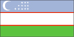
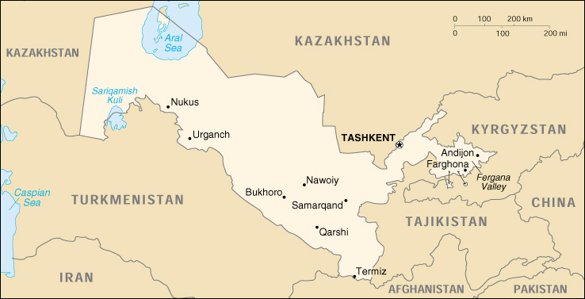

{kind=link}


| Uzbekistan |  |
|
|  | |
| Introduction |
Background: Russia conquered Uzbekistan in the late 19th century. Stiff resistance to the Red Army after World War I was eventually suppressed and a socialist republic set up in 1925. During the Soviet era, intensive production of "white gold" (cotton) and grain led to overuse of agrochemicals and the depletion of water supplies, which have left the land poisoned and the Aral Sea and certain rivers half dry. Independent since 1991, the country seeks to gradually lessen its dependence on agriculture while developing its mineral and petroleum reserves. Current concerns include terrorism by Islamic militant groups from Tajikistan and Afghanistan, a non-convertible currency, and the curtailment of human rights and democratization.
| Geography |
Location: Central Asia, north of Afghanistan
Geographic coordinates: 41 00 N, 64 00 E
Map references: Commonwealth of Independent States
Area:
total:
447,400 sq km
land:
425,400 sq km
water:
22,000 sq km
Area - comparative: slightly larger than California
Land boundaries:
total:
6,221 km
border countries:
Afghanistan 137 km, Kazakhstan 2,203 km, Kyrgyzstan 1,099 km, Tajikistan 1,161 km, Turkmenistan 1,621 km
Coastline:
0 km
note:
Uzbekistan includes the southern portion of the Aral Sea with a 420 km shoreline
Maritime claims: none (doubly landlocked)
Climate: mostly midlatitude desert, long, hot summers, mild winters; semiarid grassland in east
Terrain: mostly flat-to-rolling sandy desert with dunes; broad, flat intensely irrigated river valleys along course of Amu Darya, Sirdaryo (Syr Darya), and Zarafshon; Fergana Valley in east surrounded by mountainous Tajikistan and Kyrgyzstan; shrinking Aral Sea in west
Elevation extremes:
lowest point:
Sariqarnish Kuli -12 m
highest point:
Adelunga Toghi 4,301 m
Natural resources: natural gas, petroleum, coal, gold, uranium, silver, copper, lead and zinc, tungsten, molybdenum
Land use:
arable land:
9%
permanent crops:
1%
permanent pastures:
46%
forests and woodland:
3%
other:
41% (1993 est.)
Irrigated land: 40,000 sq km (1993 est.)
Natural hazards: NA
Environment - current issues: drying up of the Aral Sea is resulting in growing concentrations of chemical pesticides and natural salts; these substances are then blown from the increasingly exposed lake bed and contribute to desertification; water pollution from industrial wastes and the heavy use of fertilizers and pesticides is the cause of many human health disorders; increasing soil salination; soil contamination from agricultural chemicals, including DDT
Environment - international agreements:
party to:
Biodiversity, Climate Change, Climate Change-Kyoto Protocol, Desertification, Endangered Species, Environmental Modification, Hazardous Wastes, Ozone Layer Protection
signed, but not ratified:
none of the selected agreements
Geography - note: along with Liechtenstein, one of the only two doubly landlocked countries in the world
| People |
Population: 24,755,519 (July 2000 est.)
Age structure:
0-14 years:
37% (male 4,673,501; female 4,520,471)
15-64 years:
58% (male 7,140,215; female 7,283,143)
65 years and over:
5% (male 452,480; female 685,709) (2000 est.)
Population growth rate: 1.6% (2000 est.)
Birth rate: 26.18 births/1,000 population (2000 est.)
Death rate: 8.02 deaths/1,000 population (2000 est.)
Net migration rate: -2.18 migrant(s)/1,000 population (2000 est.)
Sex ratio:
at birth:
1.05 male(s)/female
under 15 years:
1.03 male(s)/female
15-64 years:
0.98 male(s)/female
65 years and over:
0.66 male(s)/female
total population:
0.98 male(s)/female (2000 est.)
Infant mortality rate: 72.13 deaths/1,000 live births (2000 est.)
Life expectancy at birth:
total population:
63.71 years
male:
60.09 years
female:
67.52 years (2000 est.)
Total fertility rate: 3.09 children born/woman (2000 est.)
Nationality:
noun:
Uzbekistani(s)
adjective:
Uzbekistani
Ethnic groups: Uzbek 80%, Russian 5.5%, Tajik 5%, Kazakh 3%, Karakalpak 2.5%, Tatar 1.5%, other 2.5% (1996 est.)
Religions: Muslim 88% (mostly Sunnis), Eastern Orthodox 9%, other 3%
Languages: Uzbek 74.3%, Russian 14.2%, Tajik 4.4%, other 7.1%
Literacy:
definition:
age 15 and over can read and write
total population:
99%
male:
99%
female:
99% (yearend 1996)
| Government |
Country name:
conventional long form:
Republic of Uzbekistan
conventional short form:
Uzbekistan
local long form:
Uzbekiston Respublikasi
local short form:
none
former:
Uzbek Soviet Socialist Republic
Data code: UZ
Government type: republic; effectively authoritarian presidential rule, with little power outside the executive branch; executive power concentrated in the presidency
Capital: Tashkent (Toshkent)
Administrative divisions:
12 wiloyatlar (singular - wiloyat), 1 autonomous republic* (respublikasi), and 1 city** (shahri); Andijon Wiloyati, Bukhoro Wiloyati, Farghona Wiloyati, Jizzakh Wiloyati, Khorazm Wiloyati (Urganch), Namangan Wiloyati, Nawoiy Wiloyati, Qashqadaryo Wiloyati (Qarshi), Qoraqalpoghiston* (Nukus), Samarqand Wiloyati, Sirdaryo Wiloyati (Guliston), Surkhondaryo Wiloyati (Termiz), Toshkent Shahri**, Toshkent Wiloyati
note:
administrative divisions have the same names as their administrative centers (exceptions have the administrative center name following in parentheses)
Independence: 31 August 1991 (from Soviet Union)
National holiday: Independence Day, 1 September (1991)
Constitution: new constitution adopted 8 December 1992
Legal system: evolution of Soviet civil law; still lacks independent judicial system
Suffrage: 18 years of age; universal
Executive branch:
chief of state:
President Islom KARIMOV (since 24 March 1990, when he was elected president by the then Supreme Soviet)
head of government:
Prime Minister Otkir SULTONOV (since 21 December 1995) and 10 deputy prime ministers
cabinet:
Cabinet of Ministers appointed by the president with approval of the Supreme Assembly
elections:
president elected by popular vote for a five-year term; election last held 9 January 2000 (next to be held NA January 2005); note - extension of President KARIMOV's original term for an additional five years overwhelmingly approved - 99.6% of total vote in favor - by national referendum held 26 March 1995); prime minister and deputy ministers appointed by the president
election results:
Islom KARIMOV reelected president; percent of vote - Islom KARIMOV 91.9%, Abdulkhafiz DZHALALOV 4.2%
Legislative branch:
unicameral Supreme Assembly or Oliy Majlis (250 seats; members elected by popular vote to serve five-year terms)
elections:
last held 5 December 1999 (next to be held NA December 2004)
election results:
percent of vote by party - NA; seats by party - NDP 32, Fidokorlar 19, Fatherland Progress Party 9, Adolat Social Democratic Party 9, MTP 6, local government 98, initiative groups 11, other 66
note:
not all seats in the last Supreme Assembly election were contested; all parties in the Supreme Assembly support President KARIMOV
Judicial branch: Supreme Court, judges are nominated by the president and confirmed by the Supreme Assembly
Political parties and leaders: Adolat (Justice) Social Democratic Party [Turgunpulat DAMINOV, first secretary]; Democratic National Rebirth Party (Milly Tiklanish) or MTP [Ibrahim GAFUROV, chairman]; Fatherland Progress Party (Vatan Tarakiyoti) or VTP [Anvar YULDASHEV, chairman]; People's Democratic Party or NDP (formerly Communist Party) [Abdulkhafiz JALOLOV, first secretary]; Self-Sacrificers Party or Fidokorlar [Erkin NORBOTAEV, general secretary]
Political pressure groups and leaders: Birlik (Unity) Movement [Abdurakhim PULATOV, chairman]; Erk (Freedom) Democratic Party [Muhamd SOLIH, chairman] was banned 9 December 1992; Human Rights Society of Uzbekistan [Abdumanob PULATOV, chairman]; Independent Human Rights Society of Uzbekistan [Mikhail AROZINOV, chairman]
International organization participation: AsDB, CCC, CIS, EAPC, EBRD, ECE, ECO, ESCAP, IAEA, IBRD, ICAO, ICRM, IDA, IFC, IFRCS, ILO, IMF, Intelsat, Interpol, IOC, ISO, ITU, NAM, OPCW, OSCE, PFP, UN, UNCTAD, UNESCO, UNIDO, UPU, WFTU, WHO, WIPO, WMO, WToO, WTrO (applicant)
Diplomatic representation in the US:
chief of mission:
Ambassador Sadyk SAFAYEV
chancery:
1746 Massachusetts Avenue NW, Washington, DC 20036
telephone:
[1] (202) 887-5300
FAX:
[1] (202) 293-6804
consulate(s) general:
New York
Diplomatic representation from the US:
chief of mission:
Ambassador Joseph A. PRESEL
embassy:
82 Chilanzarskaya, Tashkent 700115
mailing address:
use embassy street address; US Embassy Tashkent, Department of State, Washington, DC 20521-7110
telephone:
[998] (71) 120-5450
FAX:
[998] (71) 120-6335
Flag description: three equal horizontal bands of blue (top), white, and green separated by red fimbriations with a white crescent moon and 12 white stars in the upper hoist-side quadrant
| Economy |
Economy - overview: Uzbekistan is a dry, landlocked country of which 10% consists of intensely cultivated, irrigated river valleys. It was one of the poorest areas of the former Soviet Union with more than 60% of its population living in densely populated rural communities. Uzbekistan is now the world's third largest cotton exporter, a major producer of gold and natural gas, and a regionally significant producer of chemicals and machinery. Following independence in December 1991, the government sought to prop up its Soviet-style command economy with subsidies and tight controls on production and prices. Faced with high rates of inflation, however, the government began to reform in mid-1994, by introducing tighter monetary policies, expanding privatization, slightly reducing the role of the state in the economy, and improving the environment for foreign investors. The state continues to be a dominating influence in the economy, and reforms have so far failed to bring about much-needed structural changes. The IMF suspended Uzbekistan's $185 million standby arrangement in late 1996 because of governmental steps that made impossible fulfillment of Fund conditions. Uzbekistan has responded to the negative external conditions generated by the Asian and Russian financial crises by tightening export and currency controls within its already largely closed economy. Economic policies that have repelled foreign investment are a major factor in the economy's stagnation. A growing debt burden, persistent inflation, and a poor business climate cloud growth prospects in 2000.
GDP: purchasing power parity - $59.3 billion (1999 est.)
GDP - real growth rate: -1% (1999 est.)
GDP - per capita: purchasing power parity - $2,500 (1999 est.)
GDP - composition by sector:
agriculture:
27%
industry:
27%
services:
46% (1997 est.)
Population below poverty line: NA%
Household income or consumption by percentage share:
lowest 10%:
NA%
highest 10%:
NA%
Inflation rate (consumer prices): 29% (1999 est.)
Labor force: 11.9 million (1998 est.)
Labor force - by occupation: agriculture and forestry 44%, industry 20%, services 36% (1995)
Unemployment rate: 5% plus another 10% underemployed (December 1996 est.)
Budget:
revenues:
$4.4 billion
expenditures:
$4.7 billion, including capital expenditures of $1.1 billion (1997 est.)
Industries: textiles, food processing, machine building, metallurgy, natural gas
Industrial production growth rate: 6% (1999 est.)
Electricity - production: 43.47 billion kWh (1998)
Electricity - production by source:
fossil fuel:
85.2%
hydro:
14.8%
nuclear:
0%
other:
0% (1998)
Electricity - consumption: 41.327 billion kWh (1998)
Electricity - exports: 5.1 billion kWh (1998)
Electricity - imports: 6 billion kWh (1998)
Agriculture - products: cotton, vegetables, fruits, grain; livestock
Exports: $2.9 billion (1999 est.)
Exports - commodities: cotton, gold, natural gas, mineral fertilizers, ferrous metals, textiles, food products, automobiles
Exports - partners: Russia 15%, Switzerland 10%, UK 10%, Belgium 4%, Kazakhstan 4%, Tajikistan 4% (1998)
Imports: $3.1 billion (1999 est.)
Imports - commodities: machinery and equipment, chemicals, metals; foodstuffs
Imports - partners: Russia 16%, South Korea 11%, Germany 8%, US 7%, Turkey 6%, Kazakhstan 5% (1998)
Debt - external: $3.2 billion (1998 est.)
Economic aid - recipient: $276.6 million (1995)
Currency: Uzbekistani som (UKS)
Exchange rates: Uzbekistani soms (UKS) per US$1 - 141.4 (January 2000), 111.9 (February 1999), 110.95 (December 1998), 75.8 (September 1997), 41.1 (1996), 30.2 (1995)
Fiscal year: calendar year
| Communications |
Telephones - main lines in use: 1.976 million (1999)
Telephones - mobile cellular: 26,000 (1998)
Telephone system:
antiquated and inadequate; in serious need of modernization
domestic:
the domestic telephone system is being expanded and technologically improved, particularly in Tashkent and Samarqand, under contracts with prominent companies in industrialized countries; moreover, by 1998, six cellular networks had been placed in operation - four of the GSM type (Global System for Mobile Communication), one D-AMPS type (Digital Advanced Mobile Phone System), and one AMPS type (Advanced Mobile Phone System)
international:
linked by landline or microwave radio relay with CIS member states and to other countries by leased connection via the Moscow international gateway switch; after the completion of the Uzbek link to the Trans-Asia-Europe (TAE) fiber-optic cable, Uzbekistan will be independent of Russian facilities for international communications; Inmarsat also provides an international connection, albeit an expensive one; satellite earth stations - NA (1998)
Radio broadcast stations: AM 20, FM 7, shortwave 10 (1998)
Radios: 10.2 million (1997)
Television broadcast stations: 4 (plus two repeater stations that relay Russian, Kazakh, Kyrgyz, and Tadzhik programs) (1997)
Televisions: 6.4 million (1997)
Internet Service Providers (ISPs): 1 (1999)
| Transportation |
Railways:
total:
3,380 km in common carrier service; does not include industrial lines
broad gauge:
3,380 km 1.520-m gauge (300 km electrified) (1993)
Highways:
total:
81,600 km
paved:
71,237 km (these roads are said to be hard-surfaced, meaning that some are paved and some are all-weather gravel-surfaced)
unpaved:
10,363 km (dirt) (1996 est.)
Waterways: 1,100 (1990)
Pipelines: crude oil 250 km; petroleum products 40 km; natural gas 810 km (1992)
Ports and harbors: Termiz (Amu Darya river)
Airports: 3 (1997 est.)
Airports - with paved runways:
total:
3
over 3,047 m:
2
2,438 to 3,047 m:
1 (1997 est.)
| Military |
Military branches: Army, Air and Air Defense Forces, Security Forces (internal and border troops), National Guard
Military manpower - military age: 18 years of age
Military manpower - availability:
males age 15-49:
6,357,625 (2000 est.)
Military manpower - fit for military service:
males age 15-49:
5,161,926 (2000 est.)
Military manpower - reaching military age annually:
males:
262,289 (2000 est.)
Military expenditures - dollar figure: $200 million (FY97)
Military expenditures - percent of GDP: 2% (FY97)
| Transnational Issues |
Disputes - international: none
Illicit drugs: limited illicit cultivation of cannabis and very small amounts of opium poppy, mostly for domestic consumption, almost entirely eradicated by an effective government eradication program; increasingly used as transshipment point for illicit drugs from Afghanistan to Russia and Western Europe and for acetic anhydride destined for Afghanistan